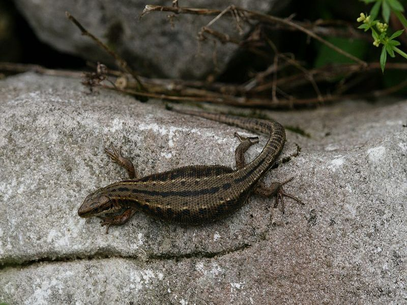

Waldeidechse
Zootoca vivipara
Die Waldeidechse bewohnt fast alle naturnahen Lebensräume im Ried. Zum Sonnenbaden erscheinen die kleinen, dunklen Echsen auch auf den Bohlenwegen des Lehrpfades. Während alle anderen Eidechsenarten Eier legen bringt die „vivipara“ voll entwickelte Jungen zur Welt. Beutetiere sind Insekten und Spinnen.